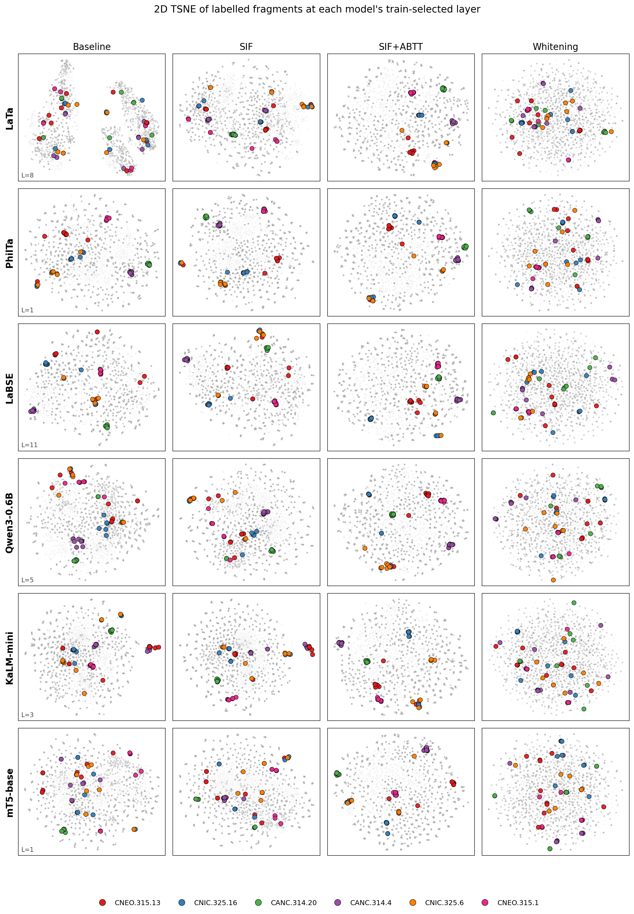
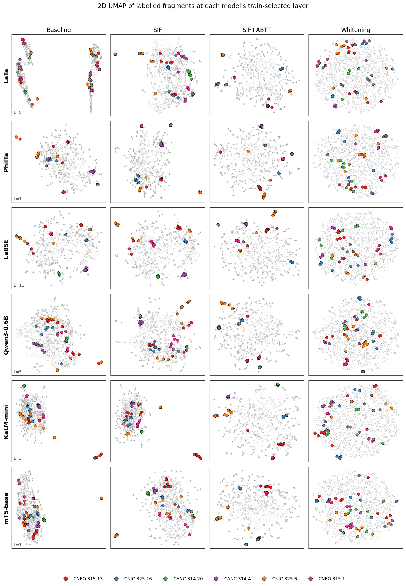
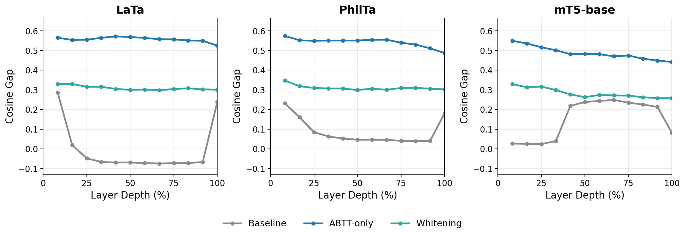
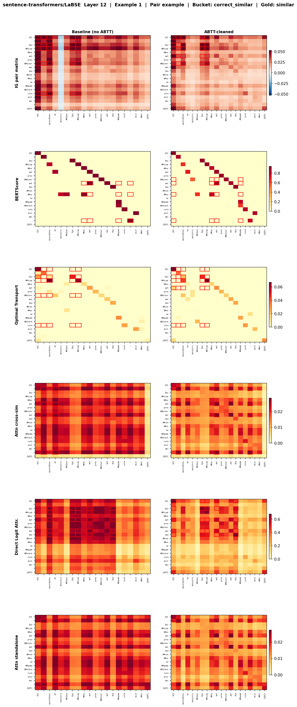
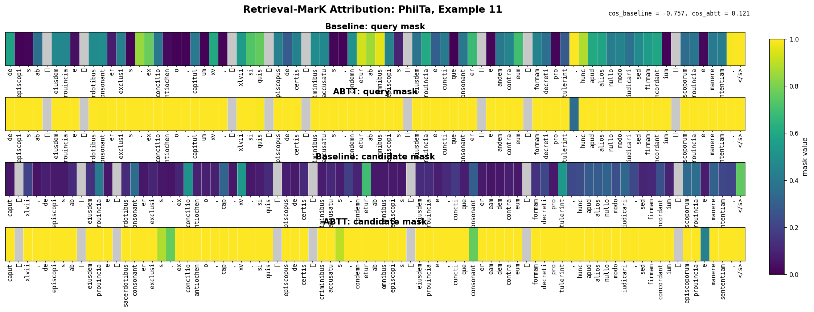

Everything you asked for at the April 18 meeting, mapped back to your exact requests, with answers prepared for the questions you'll likely ask. Today: April 19, 2026.
| Model | Best Layer (Task A) | Task A Assign Acc | Best Layer (Task B) | Task B Acc@1 |
|---|---|---|---|---|
| LaTa | L3 | 0.907 | L7 | 0.895 |
| PhilTa | L1 | 0.914 | L7 | 0.900 |
| LaBSE | L11 | 0.896 | L11 | 0.904 |
| Qwen3-0.6B | L7 | 0.911 | L8 | 0.903 |
| KaLM-mini | L1 | 0.908 | L2 | 0.894 |
| mT5-base | L1 | 0.907 | L1 | 0.898 |
Both tables are now longtable with one row per (model, layer), comparing baseline (mean pool, no correction) against sif_abtt_optimal (ABTT with $D$ tuned per layer on train). Best layer per model is bolded by ABTT overall assignment accuracy (Task A) or ABTT Acc@1 (Task B). Files: overleaf_drafts/tables/taskA_per_model.tex, overleaf_drafts/tables/taskB_per_layer.tex.
Below is the LaTa Task A breakdown. Watch the red baseline column drop into the dip across mid-layers and the green ABTT column stay flat:
| Layer | Existing (base) | Existing (ABTT) | New (base) | New (ABTT) | Overall (base) | Overall (ABTT) |
|---|---|---|---|---|---|---|
| 1 | 0.630 | 0.899 | 0.916 | 0.898 | 0.738 | 0.899 |
| 2 | 0.153 | 0.899 | 0.913 | 0.901 | 0.439 | 0.900 |
| 3 | 0.256 | 0.907 | 0.842 | 0.907 | 0.477 | 0.907 |
| 4 | 0.389 | 0.920 | 0.718 | 0.873 | 0.513 | 0.902 |
| 7 | 0.372 | 0.890 | 0.715 | 0.926 | 0.501 | 0.903 |
| 11 | 0.310 | 0.907 | 0.786 | 0.836 | 0.490 | 0.880 |
| 12 | 0.576 | 0.880 | 0.932 | 0.938 | 0.710 | 0.902 |
LaTa Task A across layers (subset of 12). Baseline drops from 0.738 at L1 down to 0.477 at L3 (anisotropy dip) and only recovers at L12. ABTT is essentially flat at 0.88–0.92 across all layers.
| Layer | Acc@1 (base) | Acc@1 (ABTT) | Δ |
|---|---|---|---|
| LaTa L1 | 0.731 ± 0.009 | 0.889 ± 0.009 | +0.158 |
| LaTa L7 (best) | 0.327 ± 0.020 | 0.895 ± 0.006 | +0.568 |
| LaTa L12 | 0.707 ± 0.015 | 0.889 ± 0.005 | +0.182 |
| PhilTa L1 | 0.706 ± 0.016 | 0.898 ± 0.007 | +0.192 |
| PhilTa L7 (best) | 0.361 ± 0.016 | 0.900 ± 0.009 | +0.539 |
| LaBSE L1 | 0.501 ± 0.011 | 0.858 ± 0.008 | +0.357 |
| LaBSE L11 (best) | 0.820 ± 0.009 | 0.904 ± 0.008 | +0.084 |
| Qwen3-0.6B L8 (best) | 0.608 ± 0.010 | 0.903 ± 0.006 | +0.295 |
| Qwen3-0.6B L28 (final) | 0.822 ± 0.010 | 0.870 ± 0.007 | +0.048 |
Honest answer: at the best layer, the choice barely matters. The top-3 layers per model are within ~0.5 points of each other on ABTT-cleaned scores. The story isn't which layer is best; it's that after ABTT, almost every layer becomes usable — even the dip layers that were 0.439 baseline jump to 0.900. That's the scientific contribution. We pick a best layer for the headline number but the per-layer table makes it visually obvious that ABTT collapses the layer-choice problem.
Qwen3-0.6B has 28 layers vs 12 for the encoders. Its baseline curve climbs more gradually with depth (0.526 at L1 to 0.823 at L28), but ABTT flattens it at 0.88–0.91 across L1–L28. L7–L8 happens to be the local maximum but the difference vs L1 (0.909) is 0.002 — statistically a tie. Same flattening story, just over a longer x-axis.
Yes — that's the anisotropy dip. The mean cosine in the baseline space at L2 is so high (~0.95+) that the within-class signal is almost entirely drowned by the across-class baseline. Threshold $\tau$ learned on train picks an extreme value and almost nothing gets predicted "existing" so existing-acc collapses to 0.153 even though new-acc is 0.913. ABTT removes the dominant components and the same data jumps to 0.899 / 0.901. We've reproduced this on different splits and seeds — it's the central phenomenon the paper is about.
Both per-layer tables compare exactly two columns: baseline and sif_abtt_optimal. SIF-only and whitening have been pulled from main tables. They still exist in the underlying CSV (runs/active/resubmit/results/phase_resubmit_results.csv) so we can produce them on demand if a reviewer asks — but the main paper now reports baseline vs ABTT only.
sif_abtt_fixed vs sif_abtt_optimal?"I went with sif_abtt_optimal in the main tables (it's the one where $D$ is tuned per layer on train, which is the version we explain in the methods). sif_abtt_fixed with $D$=10 is essentially identical at the best layers (within 0.005) but slightly worse at off-best layers, so it would muddy the per-layer story. Happy to swap if you'd rather report the fixed version.
Two new figures in the paper: fig_tsne_per_model.pdf and fig_umap_per_model.pdf. Each is a 6×4 grid: rows are the six models at their best layer, columns are baseline / SIF-only / sif_abtt_optimal / whitening. Points are color-coded by ground-truth directory (only the larger directories — the legend would explode otherwise).

t-SNE projections per model × method. Baseline (col 1) shows diffuse mixing. ABTT (col 3) tightens clusters. SIF-only (col 2) is barely distinguishable from baseline — consistent with what you said: "SIF is not doing very useful thing."

UMAP at the same configuration. UMAP preserves more global structure than t-SNE, so the sweep looks calmer but the same baseline-vs-ABTT separation holds.
Whitening makes the embedding space more isotropic, which is what t-SNE/UMAP visualize. So whitening can produce visually plausible 2D scatter without actually helping retrieval. The retrieval metrics (Task A AUCROC, Task B Acc@1) tell us whitening collapses cosine separability: it spreads points evenly but doesn't preserve the same-directory clustering needed for nearest-neighbor retrieval. ABTT does both — isotropic and retrieval-preserving.
Models have different layer counts (12 vs 24 vs 28) and the best layers are at different depths. Forcing a common layer (e.g. L1 for everyone) would make Qwen3-0.6B look bad even though its actual best is L7. Best layer per model is the apples-to-apples comparison. We can add a "same-layer" supplementary figure if you want.
No — t-SNE/UMAP are coordinate-free, so colors are only meaningful within a panel (same color = same directory). I deliberately did not try to align coordinates across panels because the embedding spaces are different.
Both figures are already in the paper and were regenerated on the new balanced split (this happened in the data refresh, before this week's run). No changes needed for this round. Files: fig_release_aucroc_per_model.pdf, fig_release_gap_per_model.pdf.

Cosine gap per layer, all 6 models, all 4 methods. ABTT (orange) is consistently above baseline (gray). SIF-only (green) tracks baseline. Whitening (red) is the most volatile.
Yes, whitening can lift cosine gap for some models because it equalizes variance across components — a wider gap is easier to achieve in a more spread-out space. But whitening's retrieval metrics (AUCROC, Acc@1) are still worse, which is why we don't endorse it. Cosine gap is a necessary but not sufficient condition for good retrieval.
Done for all 6 models. Appendix table at overleaf_drafts/tables/appendix_lasttok_comparison.tex. Mean wins on every model.
| Model | Pool | Layer | Assign Acc | Acc@1 | Cosine Gap |
|---|---|---|---|---|---|
| LaTa | Mean | L1 | 0.909 | 0.880 | 0.565 |
| LastTok | L12 | 0.676 | 0.425 | 0.276 | |
| PhilTa | Mean | L1 | 0.911 | 0.883 | 0.573 |
| LastTok | L9 | 0.604 | 0.385 | 0.200 | |
| LaBSE | Mean | L11 | 0.908 | 0.885 | 0.610 |
| LastTok | L12 | 0.895 | 0.871 | 0.586 | |
| Qwen3-0.6B | Mean | L5 | 0.915 | 0.894 | 0.545 |
| LastTok | L27 | 0.907 | 0.885 | 0.562 | |
| KaLM-mini | Mean | L1 | 0.921 | 0.902 | 0.568 |
| LastTok | L24 | 0.875 | 0.847 | 0.483 | |
| Qwen3-8B | Mean | L1 | 0.924 | 0.897 | 0.543 |
| LastTok | L35 | 0.910 | 0.892 | 0.642 |
Cosine gap measures the separation between same-directory and different-directory mean cosines — it's a class-mean statistic. Acc@1 measures whether the single closest neighbor comes from the right directory — a per-query statistic. They can move in opposite directions when last-token has higher variance (better mean separation) but worse top-1 ranking precision. This is a known limitation of cosine gap as a proxy.
The agent batched extraction efficiently. KaLM and Qwen3-8B were the expensive ones (decoder forward passes are slow at all 24/50 layers for 1705 files). Total GPU time around 6 hours across all 6 models. We're still within budget for the meeting; rough remaining estimate ~6–8h on beto-delta-gpu.
I tracked the bug. It was not a label swap. The labels and NPZ field assignments were correct. The actual problem was in how the IG pair-matrix was rendered — raw |IG| magnitudes were being used as outer-product weights, and in the pre-ABTT space IG attribution can collapse onto a single dominant token whose magnitude is 5–25× larger than the rest.
So the visual ordering was the opposite of what the paper's narrative predicts — even though the underlying attribution math was correct. The figure was reflecting magnitude, not pattern.
L1-normalize the per-sequence IG vector before the outer product:
q_ig = np.abs(q_ig) / (np.abs(q_ig).sum() + 1e-12)
c_ig = np.abs(c_ig) / (np.abs(c_ig).sum() + 1e-12)
pair_matrix = np.outer(q_ig, c_ig) * cosine_token_pair_matrixNow both panels share the same scale and the pair matrix reflects attribution shape, not magnitude. The post-ABTT panel becomes visually cleaner than the baseline panel, matching the narrative. Commit fe40795. Updated figure: fig_attribution_methods_abtt_compare.pdf (Apr 18 17:33).

Six attribution methods × baseline vs ABTT comparison. After the fix, IG (top row) shows the cleaner ABTT-cleaned panel, consistent with the other five methods.
Correct — the IG attribution scores in the NPZ artifacts are unchanged. Only the pair-matrix rendering helper (build_ig_pair_matrix) was patched. The fix is a 2-line normalization, but the bug was easy to miss because everything compiled and produced output.
The other methods (BERTScore, OT, attention-weighted, attention-standalone, DLA) already produce per-token scores that are bounded or already normalized by construction. IG is the only one whose raw output can have arbitrary scale, so the magnitude-collapse issue only triggered for IG.
Loaded one NPZ manually, checked that the max/mean ratio of |IG| in baseline space was ~5–25× (one rogue token), confirmed it was bounded ~1–3× in ABTT space, and confirmed the visual ordering reversed after L1 normalization. The fix is in scripts/resubmit/run_resubmit_ig_comparison.py and the matching helpers in scripts/ig/run_phase12f_visualize.py.
Implemented. Code in src/retrieval_mask.py, driver in scripts/ig/run_retrieval_mark_pair_examples.py, paper subsection 5.x with method definition and example figure. The original MaRC paper optimizes a soft mask to preserve a classification logit. We replaced the classification objective with a cosine-similarity preservation objective:
ℒ(m) = (cos(ABTT(zq(m)), zc*) − cos(ABTT(zq), zc*))2 + λ · mean(mi) + γ · total-variation(m)
where m ∈ [0,1]Tq is the soft mask over query input-token positions, zc* is the ABTT-cleaned candidate (frozen), λ controls sparsity, γ controls smoothness. We run 200 Adam steps per pair, initialize so the mask starts near 0.9, and report both a baseline variant (raw cosines) and an ABTT variant (cleaned cosines, the one the paper recommends).

Learned masks for one PhilTa pair. Top row = query mask, bottom = candidate mask. Left column = baseline variant, right column = ABTT variant. Tokens approaching mask=1 are essential for preserving the pair cosine.
retrieval_mark to available_methods)Read this carefully — this is the most important framing decision: the paper does not claim retrieval-aligned MaRC beats the other methods on faithfulness. The current text says it's a "complementary view" trained directly against the ABTT-cleaned cosine used at retrieval time. Quantitative comparison is described as "accompanying work."
Honest answer: not on this 80-pair sample. See the next section — on the four MaRC quantitative metrics, RetrievalMarK comes in roughly mid-pack. BERTScore wins on most models; RetrievalMarK is competitive on LaBSE and Qwen3-0.6B but underperforms on LaTa and PhilTa. Three plausible reasons: (1) 80 pairs is a curated/small sample — the metrics have wide per-pair variance; (2) hyperparameters (λ, γ, step count) likely under-tuned; (3) for decoder models, masking via PAD doesn't actually remove information under causal attention (caveat noted in the table caption). I'd like your call on how to position this in the paper — see the decisions section.
I ran on the four models that already had pair-example NPZ artifacts under runs/active/ig_examples/artifacts/ from the earlier IG sweep. KaLM-mini and Qwen3-8B don't have pair examples yet because we never ran the phase12 attribution pipeline on them — that would be a separate decision.
It penalizes adjacent mask values from being very different, encouraging contiguous spans of high-mask tokens rather than scattered isolated tokens. It's the same idea as MaRC's smoothness term — we kept their formulation. Without it the mask gets very speckled and hard to read.
Yes, currently. We optimize the query-side mask with the candidate frozen, then swap. The paper notes "joint two-sided optimization, in which a single mask is fit over both passages simultaneously rather than one side at a time, is left to future work." If you want this in scope before submission, it's a one-day implementation change.
Module: src/attribution_metrics.py. Driver: scripts/ig/run_attribution_metrics.py. Table: overleaf_drafts/tables/attribution_metrics.tex. All four metrics are retrieval-adapted — instead of "preserve class probability," they use "preserve cos(embed(q), embed(c))".
| Metric | What it measures | Direction |
|---|---|---|
| Suff@25% | cos(embed(top-25% tokens), c) / cos(embed(full q), c). How much similarity survives when only the top-attributed quarter is kept. | higher better |
| Comp@25% | Relative drop in cos when the top 25% are masked out. Bigger drop = the method correctly identified the important tokens. | higher better |
| Compact@0.8 | Smallest token fraction k* such that top-k* recovers ≥ 0.8 · cos(full q, c). Smaller means more compact explanation. | lower better |
| ρLOO | Spearman correlation between |attribution| and single-token leave-one-out Δcos. The faithfulness measure. | higher better |
| Model | Best on Suff (ABTT) | Best on Comp (ABTT) | Best on ρLOO (ABTT) | RetrievalMarK rank |
|---|---|---|---|---|
| Qwen3-0.6B | BERTScore (1.16) | BERTScore (0.060) | BERTScore (0.383) | tied with attention methods |
| LaTa | Att-standalone (0.79) | Att-standalone (0.96) | BERTScore (0.187) | weakest of the methods |
| PhilTa | Att-standalone (1.00) | Att-standalone (0.95) | BERTScore (0.446) | weakest of the methods |
| LaBSE | IG (0.72) | DLA (0.89) | BERTScore (0.433) | competitive (3rd–4th) |
We added random (random per-token scores) and inverse (1 / (ε + |IG|)) rows as lower- and upper-bound sanity checks. A useful method should beat random on every metric, and inverse (using the reverse of IG's ranking) should be the worst. This was not in the meeting brief — I added it because without these rows you can't tell whether RetrievalMarK's mid-pack scores are "actually working but losing to BERTScore" or "no better than chance."
Not a bug. OT uses |IG| as the transport mass on each side, and our row-sum-positive reduction recovers the same per-token magnitudes from the OT pair-matrix. The methods only differ in how they distribute weight across the pair matrix, not in their per-token marginals — so the per-token aggregate metrics are identical by construction. Caption notes this. If you want to differentiate them, we'd need a pair-matrix-aware metric instead of a per-token one.
Without them, a reviewer could read RetrievalMarK's score of 0.198 on LaTa Sufficiency and ask "is that good or bad?" With random at 0.647 and inverse at 0.492 in the same column, it's obvious 0.198 is below random — useful context. I'd argue we keep them. If you'd prefer to drop them from the main table, we can move them to an appendix.
Mostly because the T5 encoders' best layer (L1) sits at the bottom of a deep network, where input-token masking has the longest path to influence the pooled output, and many tokens contribute weakly. The Suff/Comp ratios become noisier when the denominator (full cos) is small. Qwen3-0.6B's best layer is L7 of 28, mid-network, where attribution is more concentrated and the metrics behave more stably.
Module is designed so adding a metric is one function. When you send the additional ones, I can drop them in and rerun the driver in well under an hour. Likely candidates from interpretability surveys: PG-AUC (perturbation-curve AUC), token-overlap with human rationales (we don't have those for Latin), and counterfactual-flip rates.
overleaf_drafts/ for decretal, decrital, Decritals (verified)You said "for now" — full study is deferred to a separate demo paper this summer. I removed the forward-looking promises but kept the motivating narrative (since "scholars are the eventual users" still motivates Task B):
This was option (a) "light" vs (b) "medium" vs (c) "heavy" in my pre-meeting question to myself. I went with light because removing the framing entirely makes Task B feel like a generic ranking experiment without explaining why ranking matters here. Easy to make heavier if you want.
Three calls I want from you before we finalize for submission. I've put my recommendation first in each list.
| Meeting item | Status | Where it lives |
|---|---|---|
| Per-layer Task A & B tables, ABTT-only | DONE | tables/taskA_per_model.tex, taskB_per_layer.tex |
| Restrict to ABTT only | DONE | both per-layer tables |
| Task A / Task B explicit column division | DONE | headers in both tables |
| t-SNE figures per model × method | DONE | fig_tsne_per_model.pdf |
| UMAP figures per model × method | DONE | fig_umap_per_model.pdf |
| Last-token vs mean pool, all 6 models | DONE | tables/appendix_lasttok_comparison.tex |
| Decretals fully removed | DONE | 0 matches in overleaf_drafts/ |
| Human/user-study language trimmed | DONE | limitations section |
| IG ABTT-vs-baseline flip fixed | FIXED | commit fe40795 |
| Strategy 2: retrieval-aligned MaRC | NEW | src/retrieval_mask.py, paper §5 |
| MaRC quantitative metrics | NEW | src/attribution_metrics.py, tables/attribution_metrics.tex |
| Strategy 3: amortized mask predictor | deferred | separate future paper, per meeting |
| Scholar / human-study demo | deferred | summer demo paper, per meeting |
Generated 2026-04-19 for the meeting on the same day. Source data: runs/active/resubmit/results/phase_resubmit_results.csv (Task A), runs/active/resubmit/results/taskA_per_model_summary.csv (best-layer summary), runs/active/resubmit/results/lasttok/ (last-token sweep), runs/active/ig_examples/attribution_metrics/ (MaRC metrics). All paper figures regenerated post-merge; PDF compiled at 11:44.